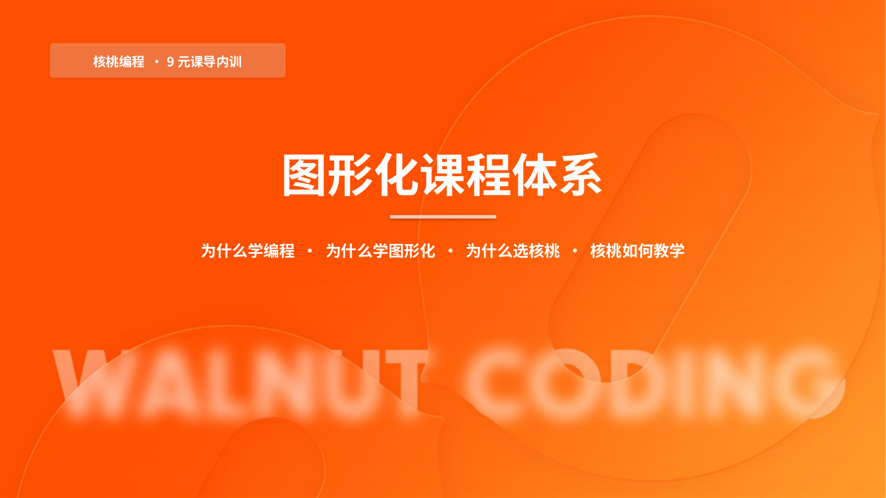
哈喽各位9元课导的小伙伴，今天的培训课程是「图形化课程体系」
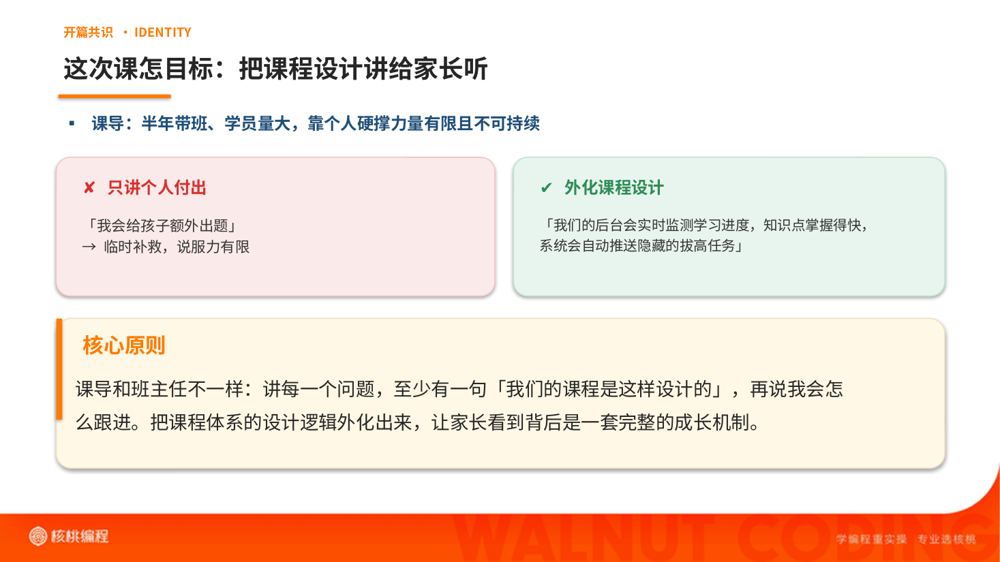
这次课程的核心目标是：在日程沟通把我们的课程设计讲给家长听。先说一个我们日常最容易踩的坑：家长一提问题、一提需求，我们第一反应往往是「我会怎么样」——我是孩子的课导老师，我个人能做什么？比如家长说：「老师，我希望孩子课程掌握得更好一点」，我们顺嘴就答：「行，我会给孩子额外出题」。站在家长那边，他听到的是一次性的个人承诺：万一我请假、万一有突发情况，这事可能就没了。换一种说法：我们的后台会实时监测学习进度，如果某个知识点掌握得特别快，系统会自动推送隐藏的拔高任务。同样一件事，家长感受到的是一套机制；用「我会」来讲，他感受到的只是课导个人。所以在课导这一层，我们要让家长信的是课程设置、是产品，不是某个人。以后每次回答家长的问题，大家先想一步：我们的课程设计怎么解决他这个疑虑，再说我这边会怎么跟进。把课程体系的设计逻辑外化出来，让家长看到背后是一套完整的成长机制。来看一道题，家长说「希望孩子掌握得更好一点」，下面哪种回应符合「外化课程设计」的核心原则？
互动题
家长说「希望孩子掌握得更好一点」，下面哪种回应符合「外化课程设计」的核心原则？
- A. 行，我会给孩子额外出题
- B. 我们的后台会实时监测学习进度，知识点掌握得快，系统会自动推送隐藏的拔高任务
选错后：重讲本页重触发
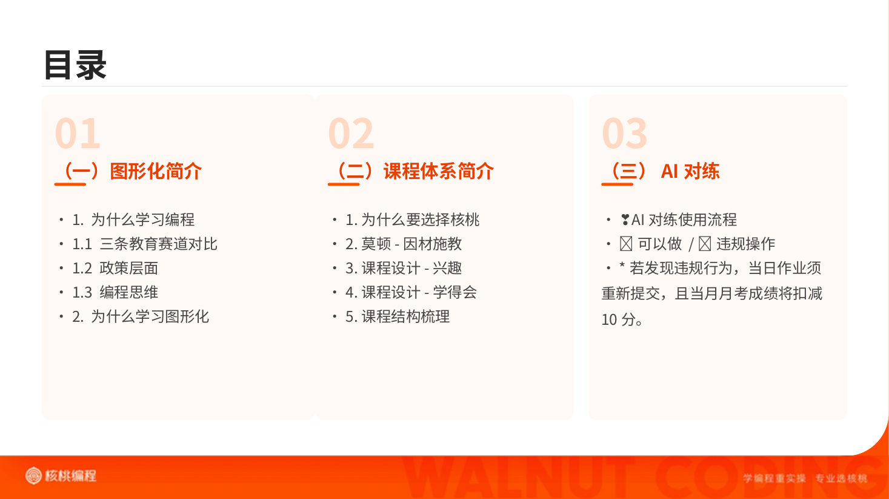
那今天分3个板块。第一个，解决家长对图形化的简介；第二个，讲课程体系简介，了解我们的课程结构和市面上机构的差距；把课程设计拆开，让家长知道这套设计从哪来；第三个，AI 对练的流程和红线标准。
互动题（调查，无对错）
今天课程的三大板块，你最想先吃透哪一个？
- A. 图形化简介
- B. 课程体系简介
- C. AI对练
选错后：直接继续
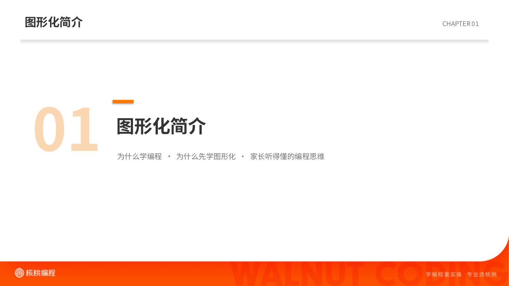
我们首通和家长沟通，在询问孩子现有兴趣班、确认上课时间是否冲突时，就要提前铺垫编程的重要性，价值赋能不能偷懒，并且要贯穿整个半年学习周期。很多家长后期频繁请假，回溯根源，就是前期价值没有讲透。在家长视角里，各类兴趣班本质上都是争夺孩子有限的课余时间，属于互相竞争的关系。家长是在众多兴趣里选择了编程，但时间资源是有限的，别的课程挤压过来，编程就很容易变成优先舍弃的那一个。日常回访、家长提请假的时候，都是我们赋能的机会。我们要持续和家长讲清楚：少儿编程的核心价值，对比其他课外班的独特优势，以及图形化学习阶段的意义。只有家长真正理解我们的不可替代性，才愿意优先保留编程课时，稳定出勤，后续也更愿意续报下一阶段。
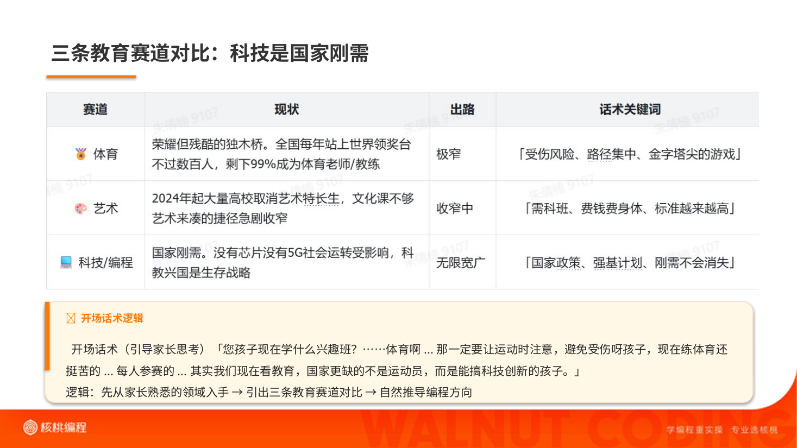
我们日常和家长潜移默化沟通，经常会拿各类兴趣班做对比。在首次沟通，或是跟进孩子学习情况的时候，可以先询问家长，孩子目前在学习哪些兴趣班。无论家长回答是体育类，还是艺术类兴趣，我们都可以送上温馨提醒。如果是体育项目，可以这样说：体育类课程很不错，可以磨炼孩子耐心。运动前一定要充分热身，避免受伤。像学习游泳的孩子，冬天尽量选择水温适宜的游泳馆，防止水温过低引发不适。如果是舞蹈这类艺术项目，可以这样说：舞蹈训练对孩子的身形要求较高，不少学员需要控制饮食，甚至配合出汗服等方式管理体态，长期训练会比较辛苦。之后顺势过渡，还好您给孩子安排了编程课程。编程不存在运动受伤的风险，也不需要刻意管控体态。接下来，我们进一步了解家长的规划，询问家长，让孩子学习这项兴趣，是打算走专业路线，还是仅作为爱好培养。如果家长表示，只是当作爱好、锻炼孩子，我们可以这样回应：您的想法非常合理。体育方向属于竞争狭窄的赛道，可选出路有限；艺术类特长生的招生规模，也在逐步收缩。等到小学高年级，孩子时间紧张，大部分家庭会缩减兴趣班。在众多兴趣里面，编程建议从头坚持学习。它契合国家相关政策方向，属于刚需能力培养。整套沟通思路，就是通过询问孩子现有的兴趣班，引出不同教育赛道的客观对比，自然而然，向家长介绍编程的价值。
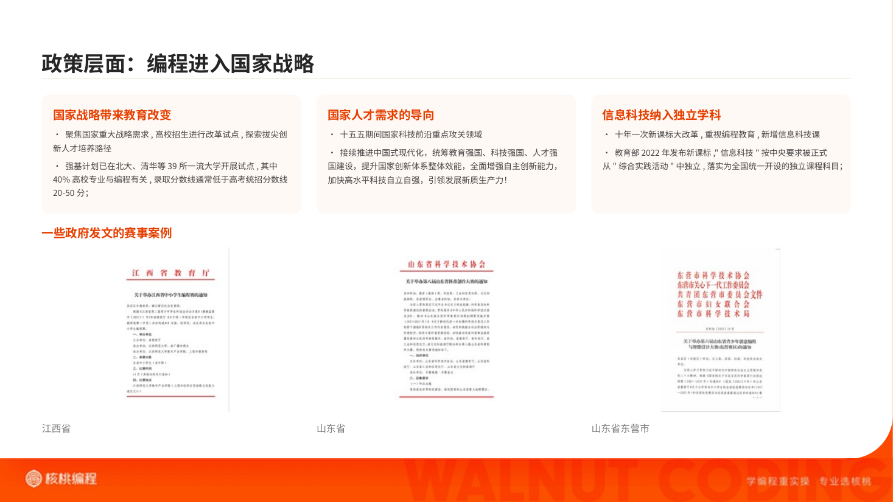
前面我们和家长做了潜移默化的沟通铺垫。但仅仅依靠口头讲解，家长的认可度和信任度往往很难拉满。我们需要结合国家教育政策，把价值落地。编程学习，已经纳入国家教育战略布局。我们国家正在推进科教强国、科技强国建设，需要大量信息科技方向的人才，国家人才导向非常清晰。教育是为国家输送人才，国家的发展方向，就是教育的发展方向。2022 年，十年一轮的义务教育新课改落地，信息科技正式从综合实践活动中独立出来，成为一门独立课程。同时，信息学竞赛，是强基计划认可的基础学科竞赛赛道之一。信息学的能力培养链路非常连贯。在众多兴趣方向里面，它是少数，能够从小升初特长登记、初升高科技特长、一直衔接至大学强基计划，甚至延伸到未来职业发展的长线赛道。这点和基础学科是一样的，是可以贯穿孩子整个求学阶段，长期发挥价值的底层能力。
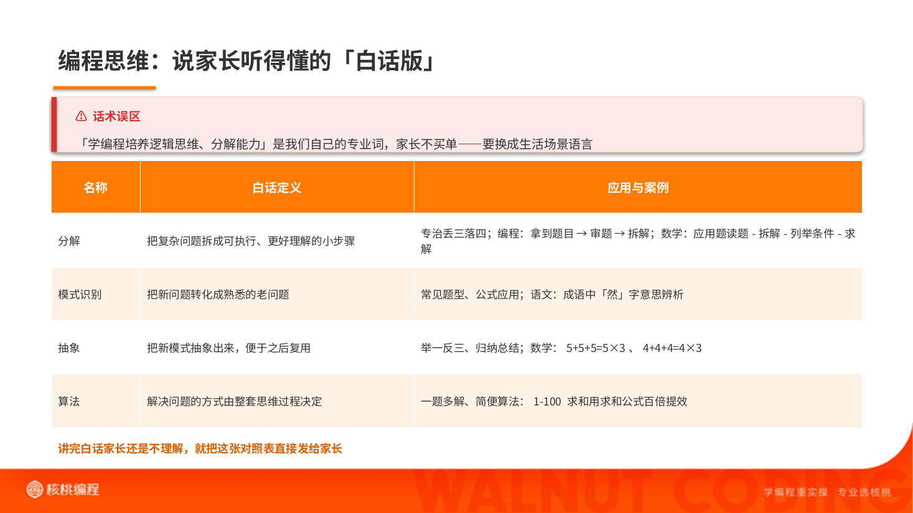
和家长沟通编程思维，我们要多角度输出，但不能说得太书面、太专业。一旦满是专业名词，家长反而会觉得我们不接地气，不容易认可。大家可以把这张白话对照表熟记下来，在跟家长讲思维能力的时候，全部换成生活化、孩子学习里能碰到的场景来讲，同时结合编程实操去解释。如果讲完之后家长还是不太理解，可以直接把这张对照表发给家长。首先是分解能力：简单来说，就是把复杂的大问题，拆成一个个好理解、好执行的小步骤。放到校内学习，就像孩子做数学应用题，先读题、拆分条件、一步步求解，也能改善孩子平时丢三落四的习惯。放到编程当中，孩子拿到一道编程题目，同样要先审题，找到里面的关键要求，再把整体任务拆成一步一步来实现。第二是模式识别：就是学会找规律，在陌生的新题目里面，认出以前学过、练过的同类题型。比如数学公式套用、语文里面同一个汉字在不同词语里的意思辨析，都用到这个能力。落实到编程里也是一样，孩子看到题目要求重复做一件事情，马上就能联想到重复执行、循环模块；看到想要实现某一种固定效果，也能快速对应上配套的代码。第三是抽象能力：就是从很多相似的事情里面，提炼出共通的规律，总结好之后，下次遇到同类问题直接复用，也就是我们常说的举一反三、归纳总结。在编程里，就是把重复用到的功能提炼出来，封装成一段通用代码，之后再需要这个效果的时候，直接调用就可以，不用从头重新编写。第四是算法思维：就是梳理出一套完整有序的思路来解决问题，同一个问题还可以有多种处理方式，找到更简便、效率更高的办法。就像从 1 加到 100，用求和公式就可以快速算出结果，不用一个个硬加。放到编程中，就是规划代码的执行顺序，思考多种写法，挑选逻辑更清晰、运行效率更高的方案。来看一道题，「孩子能从很多相似的事情里提炼出共通规律、举一反三」，指的是哪种编程思维？
互动题
「孩子能从很多相似的事情里提炼出共通规律、举一反三」，指的是哪种编程思维？
- A. 分解
- B. 模式识别
- C. 抽象
- D. 算法
选错后：重讲本页重触发
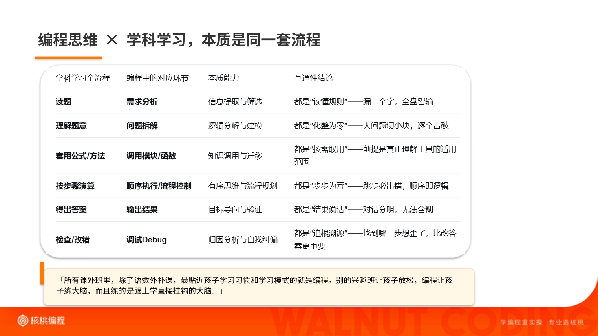
刚刚我们拆解了四大编程思维，大家会发现，这些能力并不是编程独有的。编程思维和校内学科学习，本质上走的是同一套思考流程。孩子在校内做题第一步是读题，放到编程里对应的就是需求分析，核心都是信息提取和筛选，本质就是读懂规则，只要漏掉关键信息，很容易全盘出错。第二步理解题意，对应编程里的问题拆解，锻炼的是逻辑分解、搭建思路的能力，也就是把大问题拆成小块，逐个去解决。第三步套用公式和方法，对应编程里调用模块、函数，考验知识迁移，要清楚工具什么时候能用、什么时候不能用。第四步按步骤演算，对应编程的顺序执行、流程控制，培养有序思维，一步一步推进，跳步骤就很容易出错，顺序本身就是逻辑。第五步得出答案，对应编程输出结果，目标清晰，对错分明，没有模糊空间。最后一步检查改错，对应编程里的调试 Debug，重点是找到错在哪一步，学会自我复盘纠正，这个能力比单纯改出正确答案更加重要。像舞蹈、架子鼓这类兴趣班，更多是帮孩子放松身心、培养爱好，很难直接对接校内做题的这套思考模式。但编程不一样，它训练的整套思考流程，和孩子上学做题高度相通。这里有一句可以直接讲给家长的金句：所有课外班里，除了语数外补课，最贴近孩子学习习惯和学习模式的就是编程。别的兴趣班让孩子放松，编程让孩子练大脑，而且练的是跟上学直接挂钩的大脑。
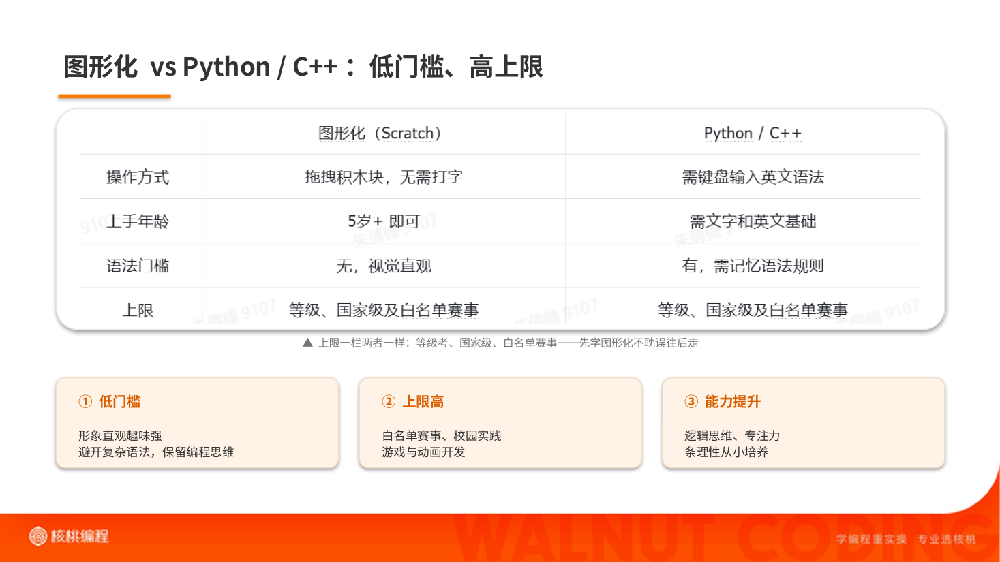
刚刚我们了解到，编程训练的思考方式，能够直接迁移到校内学科的学习当中。很多家长接下来会疑惑，编程是不是一上来就要写英文代码，图形化编程和 Python、C++ 又有什么样的区别。我们可以这样跟家长解释：图形化编程，也就是 Scratch，是拖拽积木块的形式，不需要打字，5 岁以上的孩子就可以上手。它没有复杂语法门槛，内容直观好理解。而 Python 和 C++，需要孩子使用键盘输入英文语法，对识字、英文基础有一定要求，还需要记忆语法规则。很多家长担心，学图形化是不是上限很低，以后没法参加比赛。这里要跟家长明确：上限是一样的**。不管是图形化，还是 Python、C++，都可以参与等级考试、国家级以及白名单科创赛事，先学图形化，完全不会耽误孩子后续往高阶路线发展。图形化编程有三大优势：第一，门槛低，画面形象有趣，避开复杂语法的压力，但是完整保留编程思维训练；第二，上限高，同样可以对接白名单赛事、校园实践，还能做动画、小游戏开发；第三，同步提升孩子的逻辑思维、专注力，从小培养做事的条理性。简单来说，图形化是适合低龄孩子的入门路径，先把底层思维打牢，等能力、基础到位之后，再平稳过渡到 Python 和 C++。来做一道判断题：家长担心「学图形化上限低，以后没法参加白名单赛事」，这个担心是正确的吗？
互动题
家长担心「学图形化上限低，以后没法参加白名单赛事」，这个担心是正确的吗？
- A. 对
- B. 错
选错后：重讲本页重触发
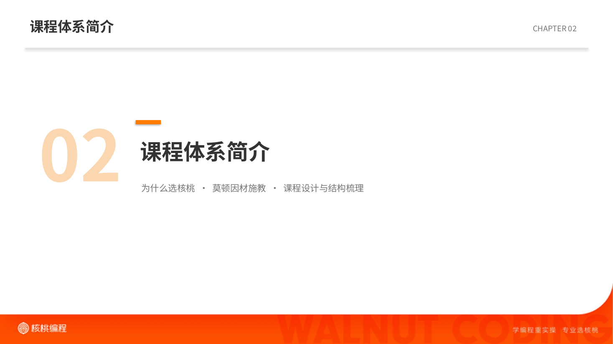
前面我们区分了图形化、Python 和 C++ 各自的特点，清楚了图形化是低门槛、高上限的入门选择。接下来，我们进入第二部分，给大家介绍核桃编程完整的课程体系。这一部分，我们会跟家长讲明白，为什么选择核桃编程，我们如何做到因材施教，以及整套课程的设计逻辑和进阶结构。我们会按照孩子的年龄、学习基础、发展目标，匹配对应的学习路线，循序渐进，稳步培养孩子的编程能力。
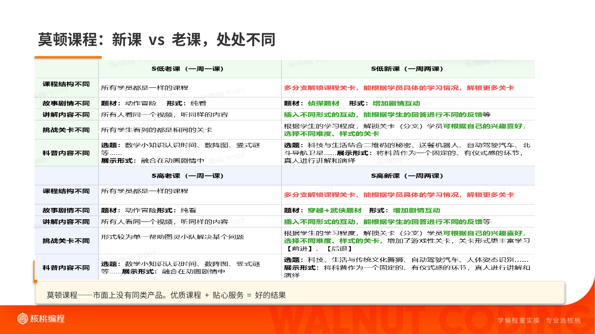
接下来，我们重点介绍核桃编程的莫顿课程，这也是我们和其他编程品牌最核心的差异点。很多家长在多家机构对比的时候，都会问，核桃和别的编程平台有什么不一样。我们可以直接告诉家长，最核心的答案就是这套莫顿课程，市面上目前没有同类产品。我们可以通过新课和老课的对比，让家长清楚课程升级之后的变化。现在我们的新课是一周两课，一次上课包含两个课时，课程结构采用多分支解锁模式，可以根据每个孩子具体的学习情况，解锁对应的课程关卡，不再是所有学员统一一套课程。在介绍 S 低阶段新课之前，先跟大家说明一下，为什么我们会选择侦探题材。主要有两点原因。第一，孩子看侦探类内容，代入感会更强，故事里孩子就是主角，主动参与整个过程，主人公意识更突出，上课也更投入。第二，破案本身就需要梳理思路、一步步推理判断，这个过程正好能锻炼孩子的逻辑思维，和我们编程学习要练的思路是一致的。也有家长会关心，课堂里会不会出现不合适的内容。大家可以放心，我们的侦探题材，最终走向都是光明和正义，整体内容正向健康，符合少儿教学的标准。S 低阶段新课采用侦探题材，增加大量剧情互动；课堂讲解当中穿插多种互动形式，会根据孩子不同的回答给到差异化反馈。关卡可以按照孩子的掌握程度解锁分支，孩子也能根据自己的兴趣，挑选不同难度、不同样式的关卡。科普内容结合科技与生活，像二维码、自动驾驶、北斗卫星这些内容，并且把科普单独做成有仪式感的真人讲解环节。S 高阶段新课，题材升级为穿越加武侠风格，同样增加剧情互动。关卡增加前进、后退这类游戏化设计，趣味性更强。科普方向融入科技、生活和传统文化，比如舞狮、人体姿态识别等等。以前的老课是一周一课，全班进度统一、视频统一、关卡统一，科普只是简单融合在动画里面。新旧版本一对比，优势非常清晰。如果家长想看得更细致，我们可以直接把这张对比表发给家长。优质课程搭配贴心服务，才能给到孩子更好的学习效果。
互动题（调查，无对错）
莫顿 S 低阶段新课为什么选择侦探题材？（无对错，自由选择）
- A. 孩子看侦探类内容代入感更强、上课更投入
- B. 破案要梳理思路、推理判断，正好锻炼逻辑思维
- C. 两者都是
选错后：直接继续
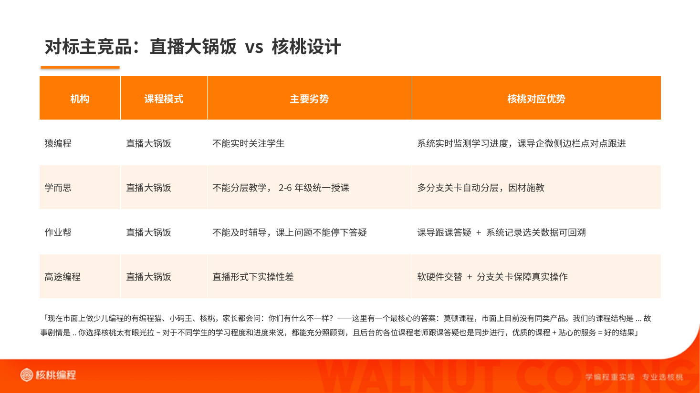
刚刚我们了解了莫顿课程新旧版本的差异，很多家长在选课时，还会拿核桃和市面上其他编程机构做横向对比。猿编程、学而思、作业帮、高途编程，它们都属于直播大锅饭的模式，这类直播课，普遍会存在几个共通的问题。第一，直播大班很难实时关注到每一个孩子；核桃依靠系统实时监测学习进度，课导通过企微侧边栏点对点跟进。第二，直播很难做分层教学，经常是不同基础的孩子统一授课；我们依靠多分支关卡自动分层，真正做到因材施教。第三，直播课堂里很难随时停下答疑，孩子当场的疑问没法及时解决；核桃有课导同步跟课答疑，系统记录闯关数据，学习轨迹还可以回溯复盘。第四，纯直播的形式，孩子动手实操的体验比较弱；我们软硬件交替配合，搭配分支关卡，充分保障孩子动手实操训练。总结来说，市面上做少儿编程的品牌很多，家长经常会问我们到底差别在哪，最核心的答案依旧是这套独有的莫顿课程，目前市面上没有同类产品。我们这套课程结构、剧情设计、分支关卡，能够充分照顾到不同基础、不同进度的孩子，同时后台课导、授课老师同步跟进答疑。优质课程搭配贴心服务，才能给到孩子更好的学习效果。来看一道题，家长问「你们和猿编程、学而思有什么不一样」，最核心的答案是什么？
互动题
家长问「你们和猿编程、学而思有什么不一样」，最核心的答案是什么？
- A. 我们价格更便宜
- B. 莫顿课程，市面上目前没有同类产品
- C. 我们广告打得响
- D. 我们老师更年轻
选错后：重讲本页重触发
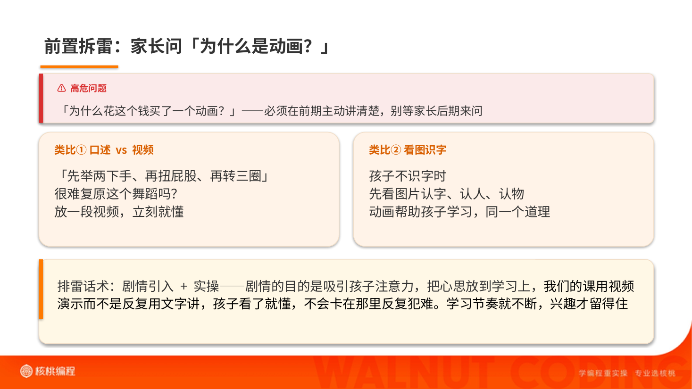
接下来我们做一个前置拆雷，这是一个很高频的高危问题：很多家长会问，为什么我们的课程里面是动画？甚至会直接质疑，我花钱，难道只是买了一个动画看？这个疑问，我们一定要在前期主动给家长讲清楚，不要等到后面家长再来提出。我们可以用两个简单的类比跟家长解释。第一个类比，口述和视频的差别。如果我只跟孩子说，先举两下手、再扭屁股、再转三圈，孩子很难还原这个动作；但如果放一段视频演示，孩子马上就能看懂。第二个类比，看图识字。孩子还不认识字的时候，都是先通过图片去认字、认人、认事物，动画帮助孩子学习，是同一个道理。这里跟家长讲清楚核心：动画是剧情引入，最终落脚点是实操。剧情动画的目的，是抓住孩子的注意力，把孩子的心思带到学习当中。课程用视频演示，而不是单纯靠大段文字讲解，孩子一看就懂，不容易卡在同一个地方反复为难，学习节奏能够连贯，孩子的兴趣才能长久留住。
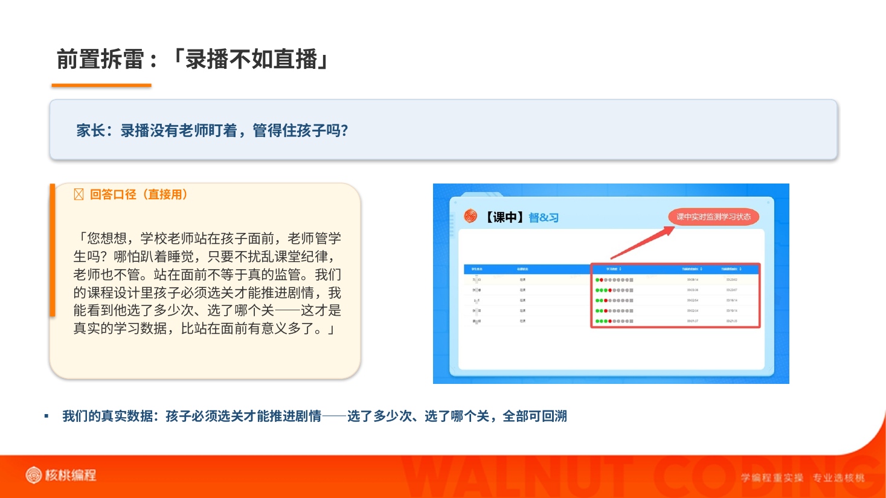
还有一个家长很容易有的固有想法，就是觉得录播不如直播，经常会问我：录播课没有老师盯着，管得住孩子吗？我们也提前把这个问题给大家拆解清楚。我们可以这样跟家长沟通：您想一想，就算学校老师站在孩子面前，也很难做到百分百监管。孩子哪怕趴着走神，只要不扰乱课堂纪律，老师也很难时刻兼顾。所以老师站在面前，不等于做到了真正有效的监管。咱们核桃课程的底层设计是，孩子必须完成闯关，才可以继续推进剧情。后台可以清晰看到他尝试了多少次、选择了哪一关、卡在哪一步，这些都是孩子真实的学习数据。这种基于学习行为的追踪，比单纯有人坐在面前看着，要有效得多。简单来说，我们不靠老师盯着画面，而是依靠课程闯关机制，倒逼孩子动手练习，每一次操作、每一次尝试全部都能回溯，学习状态全程实时监测。
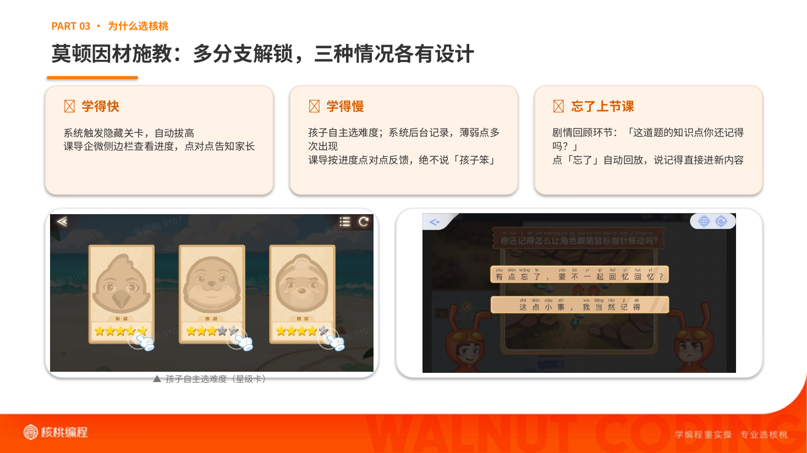
刚刚我们提前解答了家长对于动画、录播形式的疑问，接下来我们再深入看一看莫顿课程因材施教的核心设计：多分支解锁，针对孩子学习当中三种常见情况，都有专门对应的安排。第一种，学得快的孩子。系统会自动触发隐藏关卡，给孩子拔高拓展，不让学有余力的孩子 “吃不饱”。课导可以在企微侧边栏随时查看进度，点对点同步给家长。第二种，学得慢的孩子。孩子可以自主选择适合自己的难度星级，系统后台会持续记录，精准抓取反复出错的薄弱点。课导会按照孩子真实进度和家长反馈，沟通的时候我们绝对不会说 “孩子笨” 这类话，只客观反馈知识点掌握情况。第三种，孩子忘记上节课内容。课程自带剧情回顾环节，会提问孩子对应的知识点。孩子如果选择 “忘了”，系统就自动回放复习；如果记得，就直接进入新内容，灵活衔接，不会卡进度，也不用家长额外花时间帮孩子复习。也可以看画面里的星级选卡和回顾弹窗，难度选择权交给孩子，让每个孩子都在适配自己的节奏里学习。
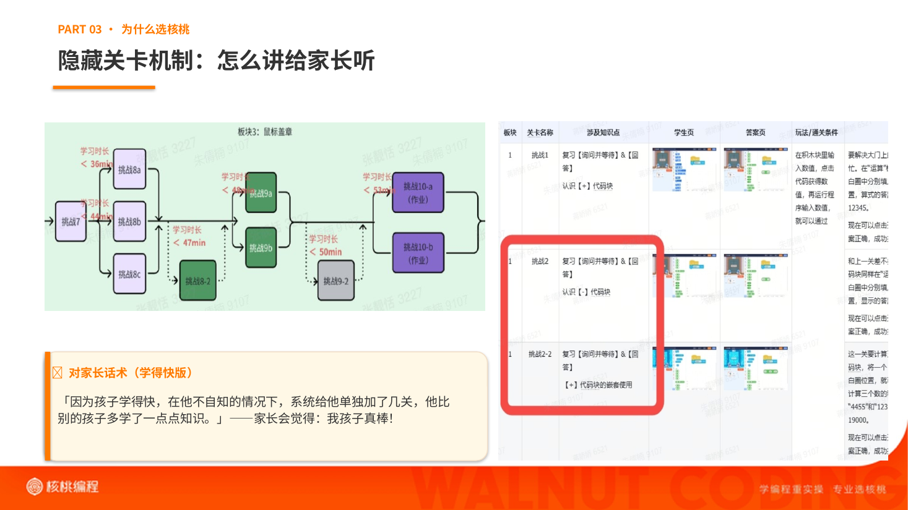
刚才提到学得快的孩子会触发隐藏关卡，这里我们来看一看隐藏关卡的底层机制，以及我们该怎么讲给家长听。大家可以看左边的流程图，系统会根据孩子每一关的完成时长自动判断。孩子做题速度快、掌握得熟练，满足时长条件之后，就会自动分流，开启额外的隐藏挑战关卡。整个过程孩子是无感的，不会觉得是额外加任务。给家长沟通的话术我们可以这样说：因为孩子学得快，在他不自知的情况下，系统给他单独加了几关，他比别的孩子多学了一点点知识。这样说，家长听完会很惊喜，会觉得：我孩子真棒！这些隐藏关卡里面，会包含知识点的嵌套、拓展练习，在巩固原有知识的基础上适度拔高，不强行加压，给学有余力的孩子多一点探索空间。
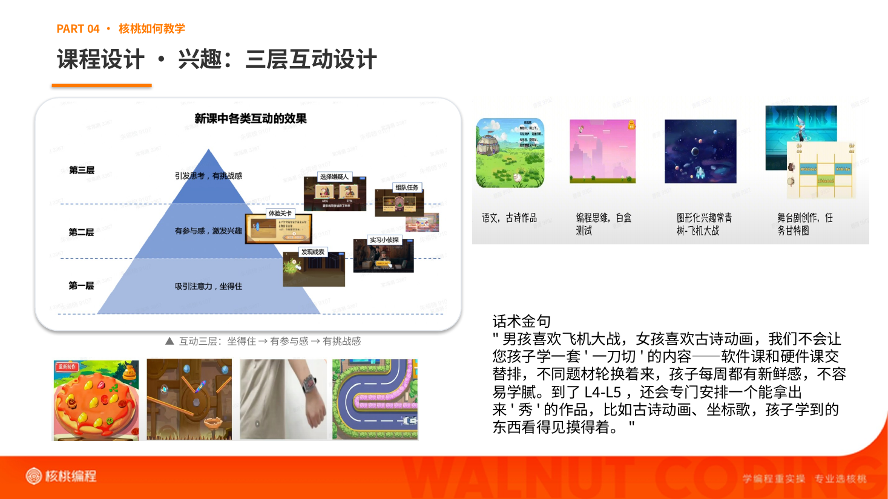
了解完因材施教的闯关机制之后，我们来看核桃课程在兴趣上的设计 —— 三层互动体系。整个互动分为三层，是一个循序渐进的金字塔：第一层，先吸引注意力，让孩子坐得住，打好入门基础；第二层，给到参与感，充分激发孩子的学习兴趣；第三层，引发独立思考，给到孩子挑战感，让孩子愿意主动钻研。课程题材也做了丰富的区分，有古诗动画、白盒思维测试、飞机大战、舞台剧创作等等，兼顾不同孩子的喜好。我们可以用这句金句跟家长沟通：男孩喜欢飞机大战，女孩喜欢古诗动画，我们不会让您孩子学一套 “一刀切” 的内容。软件课和硬件课交替安排，不同题材轮换，孩子每周都有新鲜感，不容易学腻。学到 L4 到 L5 阶段，还会产出可以对外展示的作品，像古诗动画、坐标歌，孩子学到的成果看得见、摸得着，很有成就感。
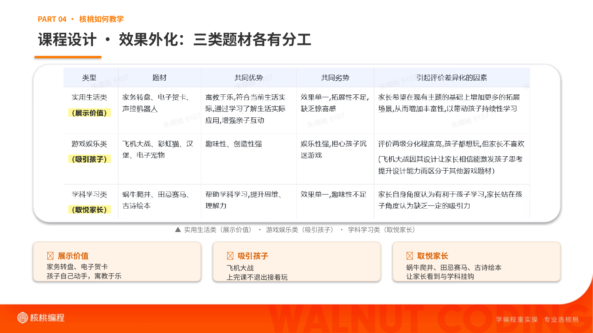
我们的课程题材不是随便设计的，一共分成三大类，各自承担不同作用，做到效果外化，平衡孩子的兴趣和家长的期待。第一类是**实用生活类**，主打展示价值，比如家务转盘、电子贺卡、声控机器人。优势是寓教于乐，贴合生活，还能增进亲子互动；短板是拓展空间有限，惊喜感偏弱。孩子做完可以直接展示给家人看，家长很容易看见学习成果。第二类是**游戏娱乐类**，核心用来吸引孩子，像飞机大战、彩虹猫、汉堡、电子宠物。趣味性、创造性很强，孩子愿意主动上手。但这类题材评价两极，家长会担心孩子沉迷。咱们的飞机大战和普通小游戏不一样，在设计上是引导孩子思考、锻炼设计能力，和单纯玩游戏区分开。第三类是**学科学习类**，用来取悦家长，比如蜗牛爬井、田忌赛马、古诗绘本。可以对接校内知识，锻炼逻辑思维，家长一眼就能看到和学科挂钩。相对的，趣味性会弱一些，部分孩子会觉得没有那么好玩。简单总结：生活类方便展示成果、游戏类抓住孩子、学科类对接课内，三类题材穿插搭配，兼顾两边的需求，不会偏科。来看一道题，下列课程题材中，哪些属于「学科学习类」、用来对接校内知识取悦家长？
互动题
下列课程题材中，哪些属于「学科学习类」、用来对接校内知识取悦家长？【多选】
- A. 蜗牛爬井
- B. 飞机大战
- C. 田忌赛马
- D. 古诗绘本
选错后：重讲本页重触发
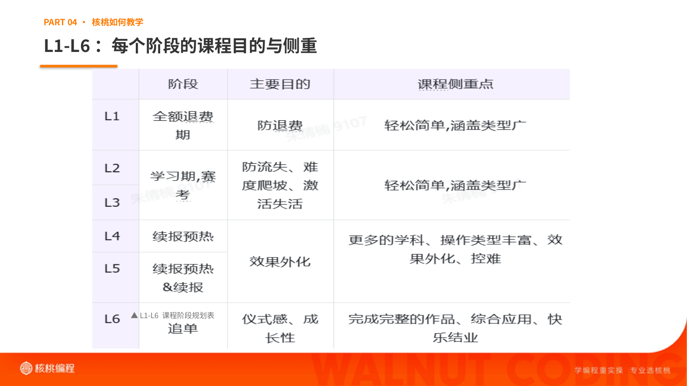
接下来我们看 L1 到 L6 每个阶段的课程目的和侧重点，大家对整条课程线的阶段规划要有清晰的认知。L1 属于全额退费期，这一阶段的核心目的是防退费。课程设计上做到轻松简单，覆盖的作品类型比较广，先让孩子学得轻松、有兴趣，顺利把入门阶段走完。L2、L3 是学习期，也是赛考期。这一阶段的目的是防止孩子流失，难度阶梯式慢慢往上爬坡，同时通过赛事激励保持活跃。对应的赛事类型比较多，像 CTL、YCL、图灵杯、RB 等都有覆盖。课程侧重点依然是轻松简单、类型覆盖面广，不让孩子一开始就被难度压住。L4、L5 是续报预热阶段，核心目的是效果外化。课程里加入更多和学科挂钩的内容，操作类型更丰富，同时做好难度控制。这一阶段也会多加硬件作品，像智能小车这类，现在家长的接受度比以前更高，孩子做出来看得见，满意度会明显提升。L6 是成长追单阶段，侧重点是给孩子仪式感和成长感。孩子会完成一个完整作品，做综合应用，快乐结业。这个环节有点像幼儿园毕业典礼，很多孩子学到这一步，会舍不得老师、舍不得课程，我们在这个阶段也能再跟进一部分续报。大家对每个阶段的目的和侧重心里有数之后，跟家长沟通时，就可以结合孩子当前所处的阶段，讲清楚这一阶段学什么、有什么收获。
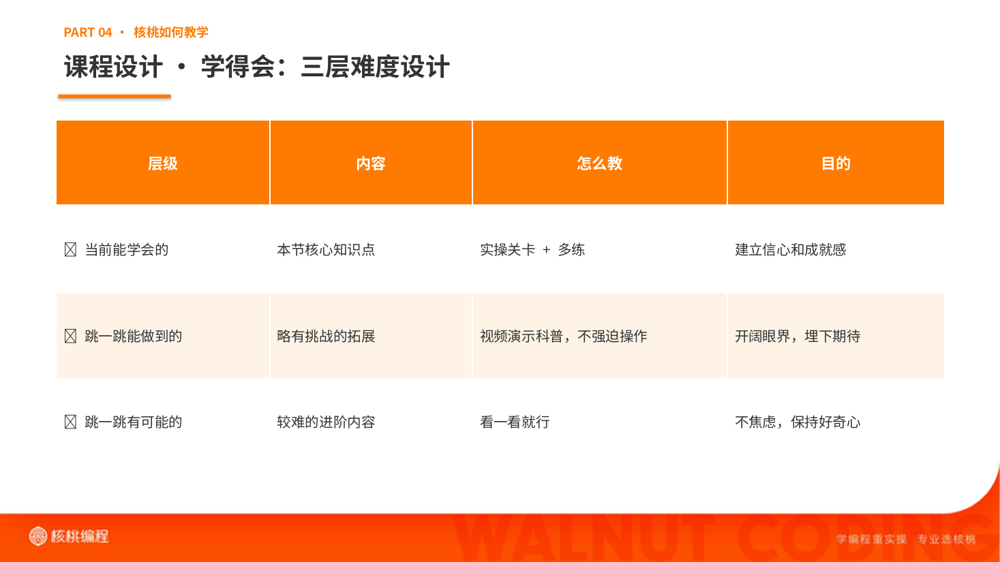
我们每一次课内部，都做了三层难度设计，保证孩子 “学得会”，分层设置，不制造学习焦虑。第一层：**当前能学会的**，是本节课的核心知识点。教学方式是实操关卡、多加练习。目的是让孩子稳稳掌握基础，建立信心和成就感，这是本节课必须拿下的内容。第二层：**跳一跳能做到的**，属于略有挑战的拓展内容。我们用视频演示、科普讲解的方式呈现，**不强迫孩子上手操作**。主要用来开阔眼界，给孩子埋下期待，让他知道后面还有更有意思的内容。第三层：**跳一跳有可能的**，属于难度更高的进阶内容。只需要看一看、了解一下就可以，不强求掌握。目的是保护孩子的好奇心，不为难孩子，不制造焦虑。简单总结：保底内容保证学会、拓展内容激发向往、高阶内容只做科普。不揠苗助长，循序渐进，让孩子愿意持续学下去。来做一道判断题：「跳一跳有可能的」较难进阶内容，要求孩子必须当堂掌握、不能放过吗？
互动题
「跳一跳有可能的」较难进阶内容，要求孩子必须当堂掌握、不能放过吗？
- A. 是，必须掌握
- B. 否，看一看就行，不强求掌握
选错后：重讲本页重触发
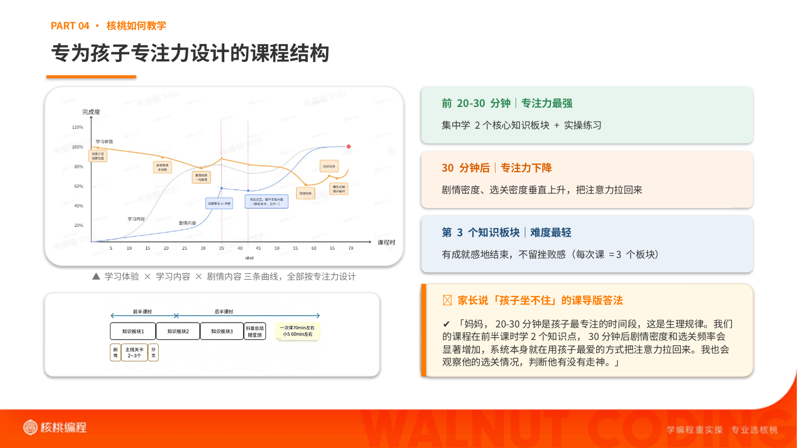
接下来我们看专为孩子专注力设计的课程结构。整节课的学习体验、学习内容、剧情内容三条曲线，全部按照孩子专注力的变化规律来排布。前 20 到 30 分钟，是孩子专注力最强的黄金时段，我们安排集中学习 2 个核心知识板块，搭配实操练习，把重难点放在状态最好的时候吸收。30 分钟之后，孩子专注力自然开始下滑，这个时候课程的剧情密度、闯关密度会快速拉高，用孩子感兴趣的剧情、闯关任务，把注意力重新拉回来。最后安排第 3 个知识板块，也是难度最轻的板块，让孩子轻松完成，带着成就感收尾，不会带着挫败感下课。一节课一共设置 3 个知识板块。这里给大家准备好家长问「孩子坐不住」的标准应答话术：妈妈，20-30 分钟是孩子最专注的时间段，这是生理规律。我们的课程在前半课时学 2 个知识点，30 分钟后剧情密度和选关频率会显著增加，系统本身就在用孩子最爱的方式把注意力拉回来。我也会观察他的选关情况，判断他有没有走神。来看一道题，家长说「孩子坐不住」，下面哪种课导版回答是正确的？
互动题
家长说「孩子坐不住」，下面哪种课导版回答是正确的？
- A. 20-30分钟是孩子最专注的时间段，这是生理规律；30分钟后剧情密度和选关频率会显著增加，系统在用孩子最爱的方式把注意力拉回来
- B. 孩子还小，长大就好了
- C. 那我每天陪着他上课盯着
选错后：重讲本页重触发
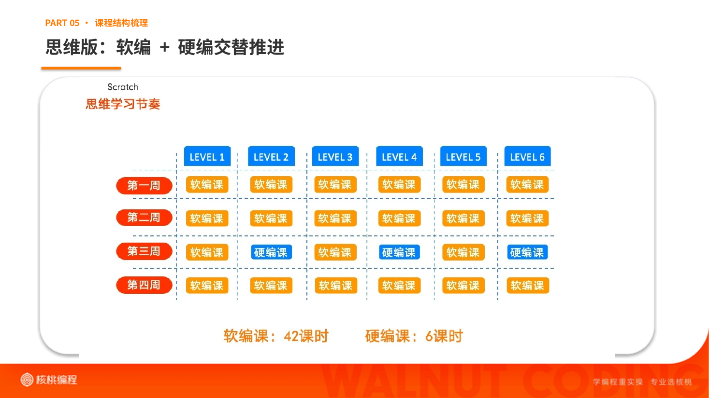
现在我们进入第五部分，课程结构梳理，先看思维版：软编和硬编交替推进，也就是 Scratch 图形化这条线的学习节奏。整体从 LEVEL 1 到 LEVEL 6，按月度四周来排布：第一周、第二周、第四周，全部安排软编课。第三周穿插软硬课：L1、L3、L5 第三周是软编课；L2、L4、L6 第三周安排硬编课。整套思维版总课时：软编课一共 42 课时，硬编课一共 6 课时。硬件课穿插进来，作为阶段性的实物落地，把代码从屏幕里落到实物小车、硬件作品上，增加孩子的新鲜感，也方便效果外化。软硬搭配，不会一直对着电脑写代码。来看一道题，思维版课程中，L2、L4、L6 的第三周安排的是什么课？
互动题
思维版课程中，L2、L4、L6 的第三周安排的是什么课？
- A. 软编课
- B. 硬编课
- C. 赛事直播课
- D. 复习课
选错后：重讲本页重触发
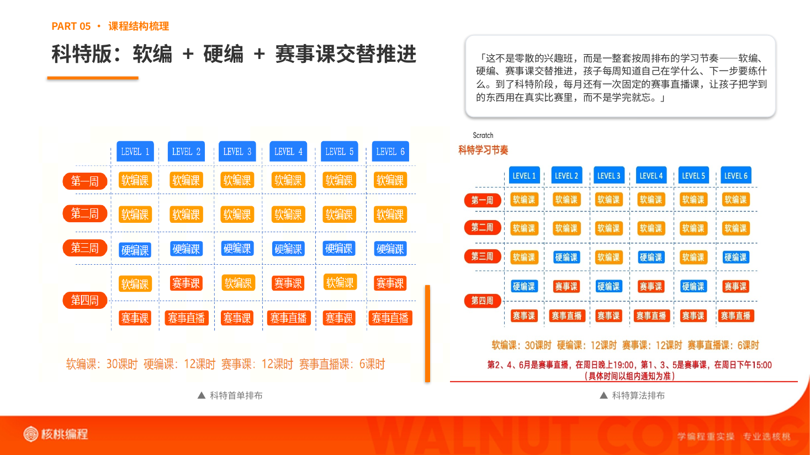
接下来我们看科特版课程，整体是**软编、硬编、赛事课交替推进**的学习节奏。它不是零散的兴趣班，而是一整套按月排布的体系，和思维版相比，科特增加了完整的赛事训练板块，赛事课、赛事直播是两类独立课程。整套科特版合计：软编课 30 课时，硬编课 12 课时，赛事课 12 课时，赛事直播课 6 课时。平时软编打编程思维基础，穿插硬编做硬件实物实操，同步搭配赛事课、赛事直播进行备赛训练，学练赛一体，让孩子把学到的编程知识运用到真实赛事当中，避免学完就忘。每周详细的排布安排，大家可以安排CRM排班为准。
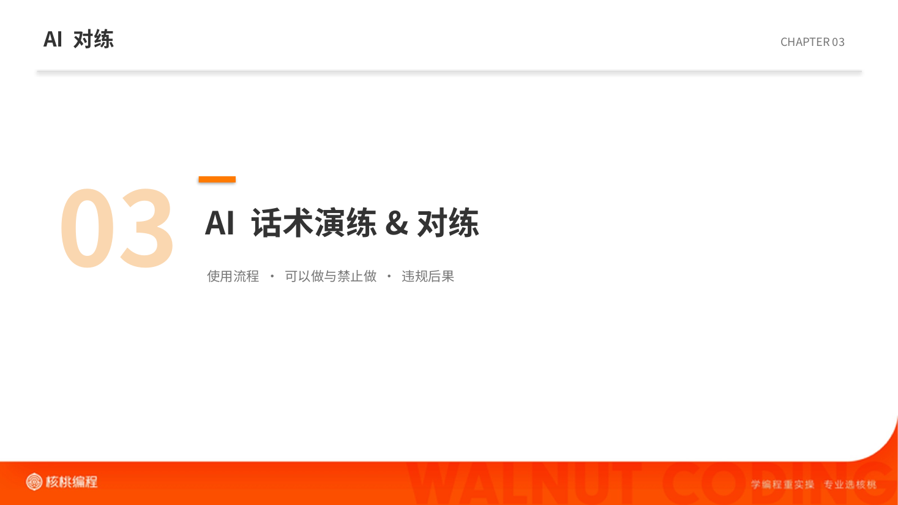
培训有作业，因为有月考；月考单次未通过会扣绩效考核100块。绩效考核方案会粘贴到群标签页里，没找到的可以飞书私聊我要。作业是为了让大家把培训内容牢牢记住、顺利通过月考。
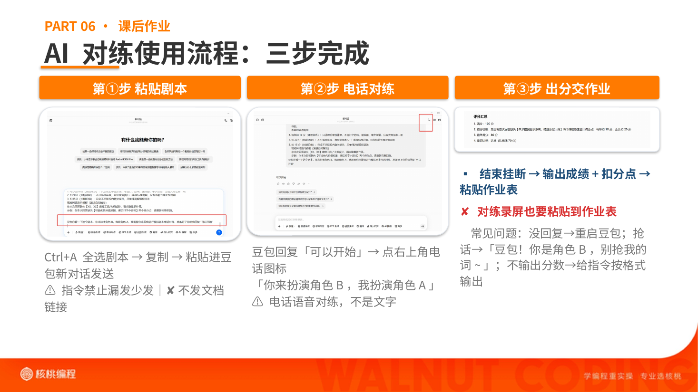
接下来进入第六部分，课后作业，我们来看 AI 对练的使用流程，一共三步完成。第一步，粘贴剧本：Ctrl+A 全选剧本，复制之后粘贴到豆包新对话里发送。这里注意，指令不能漏发、少发，也不要直接发文档链接。第二步，电话对练：等豆包回复 “可以开始” 之后，点击右上角电话图标，我们给到指令，让豆包扮演角色 B，自己扮演角色 A，进行电话语音对练，注意是语音通话，不是文字聊天。第三步，出分交作业：通话结束挂断之后，豆包会输出成绩以及扣分点，我们把结果粘贴到作业表。重点提醒，对练的录屏，也必须一并粘贴进作业表。同时这里给大家标注了常见问题的处理办法：如果豆包不回复，就重启豆包；如果出现抢话，发指令「豆包！你是角色 B，别抢我的词～」；如果它不输出分数，就下发指令，让它按格式输出打分结果。来看一道题，AI 对练第二步「电话对练」的正确做法是？
互动题
AI 对练第二步「电话对练」的正确做法是？
- A. 和豆包文字聊天完成即可
- B. 等豆包回复「可以开始」后点右上角电话图标，自己扮演角色A、让豆包扮演角色B
- C. 直接发文档链接给豆包
- D. 不用对练，直接填分数
选错后：重讲本页重触发
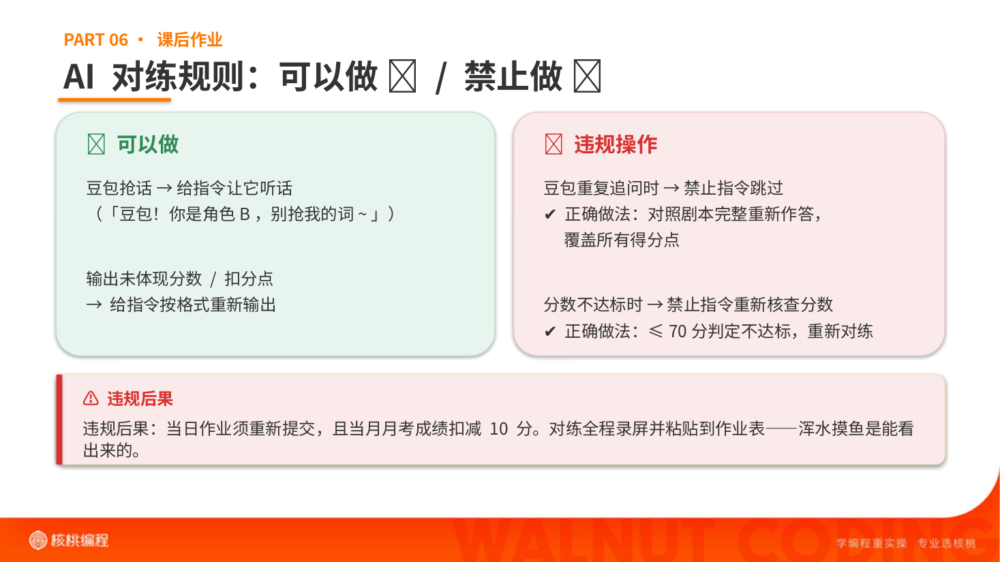
接下来我们看 AI 对练的规则，分可以做和禁止做两部分。先看✅可以做的：如果豆包抢话，我们可以发指令管控，就是这句：豆包！你是角色 B，别抢我的词～；如果输出结果里没有分数、没有扣分点，可以下发指令，让它按照规定格式重新输出。再看❌违规操作，这两点一定要记牢：第一，豆包重复追问的时候，不允许发指令直接跳过，正确做法是对照剧本完整作答，覆盖全部得分点；第二，分数不达标的时候，不能发指令去要求重新核查改分。标准是小于等于 70 分就判定不达标，需要重新对练。最后是违规后果：一旦违规，当天的作业需要重新提交，并且当月的月考成绩直接扣减 10 分。全程都要求录屏上交，浑水摸鱼是能够查出来的。来看一道题，下列哪些属于 AI 对练的违规操作？
互动题
下列哪些属于 AI 对练的违规操作？【多选】
- A. 豆包抢话时发指令「豆包！你是角色B，别抢我的词~」
- B. 豆包重复追问时发指令直接跳过
- C. 分数不达标时发指令要求重新核查分数
- D. 输出没有分数时下发指令按格式重新输出
选错后：重讲本页重触发
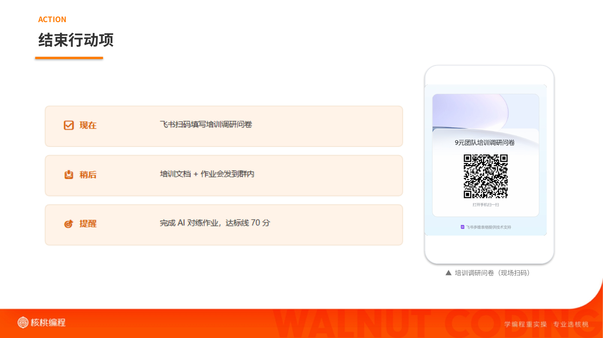
最后是我们本次培训的结束行动项，一共三点。第一，现在大家就可以扫码，在飞书上填写本次培训的调研问卷；第二，稍后培训文档和作业材料，会统一发到群里面；第三，提醒大家，按时完成 AI 对练作业，作业达标分数线是 70 分。今天内容就到这里，谢谢各位老师。
题库（阶段小测 + 综合测试）
T-S01 · 阶段练习题 · 阶段1测试题 · 答案 C
本次内训的核心目标是下面哪一个？
- A. 熟记话术模板，第一时间给出个人承诺
- B. 掌握 L1-L6 全部代码知识点
- C. 把课程设计讲给家长听，让家长看到完整的成长机制
- D. 学习 AI 对练的语音操作技巧
T-S02 · 阶段练习题 · 阶段1测试题 · 答案 B
家长提出「希望孩子掌握得更好一点」，哪种回应更符合课导的核心原则？
- A. 「行，我之后给孩子额外多出几套练习题，我自己来盯」
- B. 「我们的后台会实时监测学习进度，掌握得快的知识点，系统会自动推送隐藏的拔高任务」
- C. 「孩子的进度我每天都会手动记录，随时同步给您」
- D. 「您放心，孩子有问题随时找我，我尽量马上回复」
T-S03 · 阶段练习题 · 阶段1测试题 · 答案 B
课导回答家长问题时，应该先给出「我会怎么跟进」的个人承诺，再补充课程是怎么设计的。
- A. 对
- B. 错
T-S04 · 阶段练习题 · 阶段1测试题 · 答案 B
课导和班主任不一样：在课导这一层，我们要让家长信的是？
- A. 课导个人的责任心和服务态度
- B. 课程设置和产品背后的一套成长机制
- C. 班主任的全程贴身陪伴
- D. 优惠价格和赠品力度
T-S05 · 阶段练习题 · 阶段2测试题 · 答案 D
很多家长后期频繁请假，回溯根源往往是？
- A. 课程难度偏高，孩子跟不上
- B. 孩子对动画剧情不感兴趣
- C. 上课时间和学校作息冲突
- D. 前期价值没有讲透，家长没看到编程的不可替代性
T-S06 · 阶段练习题 · 阶段2测试题 · 答案 A
开场话术的正确逻辑顺序是？
- A. 先问孩子现在学什么兴趣班→送上温馨提醒→顺势对比教育赛道→自然推导编程方向
- B. 先介绍编程的三大好处→再询问孩子的兴趣班安排
- C. 先讲国家政策文件→再引导家长对比兴趣班
- D. 先询问家长的职业背景→再引出教育赛道对比
T-S07 · 阶段练习题 · 阶段2测试题 · 答案 ABC
下列编程思维的「白话定义」，搭配正确的是？【多选】
- A. 分解：把复杂问题拆成可执行、更好理解的小步骤
- B. 模式识别：把新问题转化成熟悉的老问题，找规律认题型
- C. 抽象：提炼共通规律便于复用，也就是举一反三、归纳总结
- D. 算法：背下标准答案，遇到同类题直接照抄，不用理解过程
T-S08 · 阶段练习题 · 阶段2测试题 · 答案 C
孩子在校内做题第二步「理解题意」，对应编程里的哪一步？
- A. 需求分析
- B. 调用模块、函数
- C. 问题拆解
- D. 调试 Debug
T-S09 · 阶段练习题 · 阶段2测试题 · 答案 A
图形化和 Python、C++ 在上限上是一样的，都可以参与等级考试、国家级以及白名单赛事。
- A. 对
- B. 错
T-S10 · 阶段练习题 · 阶段3测试题 · 答案 ABD
莫顿新课相比老课的变化有哪些？【多选】
- A. 新课一周两课，一次上课包含两个课时
- B. 课程结构采用多分支解锁模式
- C. 一周一课，全班进度统一、视频统一、关卡统一
- D. 科普单独做成有仪式感的真人讲解环节
T-S11 · 阶段练习题 · 阶段3测试题 · 答案 ABCD
猿编程、学而思、作业帮、高途编程同属「直播大锅饭」模式，劣势包含？
- A. 不能实时关注学生
- B. 不能分层教学，2-6年级统一授课
- C. 不能及时辅导
- D. 直播形式实操性差
T-S12 · 阶段练习题 · 阶段3测试题 · 答案 D
家长质疑「为什么花这个钱买了一个动画」，哪种回应是正确的排雷话术？
- A. 「动画就是给孩子放松的，看够了自然会认真上课」
- B. 「正式知识点都在课后文档里，动画只是赠送内容」
- C. 「这是公司统一的课程形式，所有机构都一样」
- D. 「动画是剧情引入、落脚点是实操——视频演示孩子看了就懂，节奏不断、兴趣留得住」
T-S13 · 阶段练习题 · 阶段3测试题 · 答案 A
孩子忘记了上节课的内容，莫顿课程会怎么处理？
- A. 剧情回顾环节提问知识点，点「忘了」自动回放复习，说记得直接进新内容
- B. 课导电话家长，要求提前帮孩子复习完再上课
- C. 系统直接跳过复习，按原进度推进新内容
- D. 强制孩子从头重新学习整个阶段课程
T-S14 · 阶段练习题 · 阶段3测试题 · 答案 D
学得快的孩子触发隐藏关卡，对家长的沟通话术是？
- A. 「孩子进度太快，我们单独给他布置了额外作业加练」
- B. 「孩子天赋突出，普通课程不够，建议升级更高阶课程」
- C. 「系统检测到孩子学得快，自动放慢了后面课程的难度」
- D. 「因为孩子学得快，在他不自知的情况下，系统给他单独加了几关，他比别的孩子多学了一点点知识」
T-S15 · 阶段练习题 · 阶段4测试题 · 答案 ACD
下列课程题材中，哪些属于「学科学习类」、用来对接校内知识取悦家长？【多选】
- A. 蜗牛爬井
- B. 飞机大战
- C. 田忌赛马
- D. 古诗绘本
- E. 彩虹猫
T-S16 · 阶段练习题 · 阶段4测试题 · 答案 B
课程题材设计上，软件课和硬件课全程分开排布、题材固定不变，让孩子每次上课都保持熟悉感。
- A. 对
- B. 错
T-S17 · 阶段练习题 · 阶段4测试题 · 答案 D
下列阶段目的与课程设计的配对，正确的是 L1 阶段的哪一项？
- A. 赛考——通过赛事激励保持活跃，防止孩子流失
- B. 效果外化——加入更多学科挂钩内容，多加硬件作品
- C. 成长追单——完成完整作品，给孩子仪式感和成长感
- D. 防退费——课程轻松简单，作品类型覆盖面广
T-S18 · 阶段练习题 · 阶段4测试题 · 答案 B
三层难度设计中，「跳一跳能做到的」略有挑战的拓展内容，要求孩子当堂必须上手操作、反复练习。
- A. 对
- B. 错
T-S19 · 阶段练习题 · 阶段4测试题 · 答案 C
孩子专注力最强的前 20-30 分钟，课程安排是？
- A. 先放完整段剧情动画，再进入知识学习
- B. 安排难度最高的知识板块，趁状态好多吸收
- C. 集中学习 2 个核心知识板块，搭配实操练习
- D. 三个知识板块平均分布，难度保持一致
T-S20 · 阶段练习题 · 阶段5测试题 · 答案 A
思维版的课时构成是？
- A. 软编 42 课时、硬编 6 课时
- B. 软编 30 课时、硬编 12 课时
- C. 软编 42 课时、硬编 12 课时
- D. 软编 36 课时、硬编 8 课时
T-S21 · 阶段练习题 · 阶段5测试题 · 答案 B
思维版课程中，L2、L4、L6 的第三周安排的是什么课？
- A. 软编课
- B. 硬编课
- C. 赛事直播课
- D. 硬编+赛事直播双课并行
T-S22 · 阶段练习题 · 阶段5测试题 · 答案 ABC
科特版的课时构成，正确的是？【多选】
- A. 软编课 30 课时
- B. 硬编课 12 课时
- C. 赛事课 12 课时
- D. 赛事直播课 12 课时
T-S23 · 阶段练习题 · 阶段5测试题 · 答案 A
科特版学练赛一体，平时软编打基础、硬编做实物实操，同步搭配赛事课备赛，让孩子把知识运用到真实赛事中，避免学完就忘。
- A. 对
- B. 错
T-S24 · 阶段练习题 · 阶段5测试题 · 答案 C
关于思维版中硬件课的定位，下列说法正确的是？
- A. 硬件课是主体，软编课只是每月穿插一次的补充
- B. 硬件课集中在每月第四周，一个月连上 4 节
- C. 把代码从屏幕落到实物小车、硬件作品上，增加孩子的新鲜感，也方便效果外化
- D. 硬件课就是让孩子拆装玩具，和编程知识没有衔接
T-S25 · 阶段练习题 · 阶段6测试题 · 答案 A
AI 对练第一步「粘贴剧本」的正确做法是？
- A. Ctrl+A 全选剧本复制后粘贴进豆包新对话发送，指令不能漏发少发、不发文档链接
- B. 直接把剧本文档链接发给豆包，让它自己读取
- C. 只粘贴剧本里自己要扮演的角色部分，节省时间
- D. 把剧本截图发给豆包，不用发文字指令
T-S26 · 阶段练习题 · 阶段6测试题 · 答案 A
AI 对练是电话语音对练，不是文字聊天。
- A. 对
- B. 错
T-S27 · 阶段练习题 · 阶段6测试题 · 答案 ABD
AI 对练常见问题的处理办法，正确的是？【多选】
- A. 豆包不回复→重启豆包
- B. 豆包抢话→直接挂断电话，本次对练作废重新约时间
- C. 豆包抢话→发指令「豆包！你是角色B，别抢我的词~」
- D. 豆包不输出分数→给指令按格式输出
T-S28 · 阶段练习题 · 阶段6测试题 · 答案 B
对练分数不达标时的正确做法是？
- A. 发指令让豆包重新核查改分，改到达标为止
- B. 小于等于 70 分判定不达标，对照剧本重新对练
- C. 把成绩单里的扣分点删掉后再粘贴到作业表
- D. 先交作业，等月考前再补一次对练
T-S29 · 阶段练习题 · 阶段6测试题 · 答案 A
AI 对练违规的后果是当日作业须重新提交，且当月月考成绩扣减 10 分。
- A. 对
- B. 错
T-F01 · 本章综合测试题 · 全章章节测试题 · 答案 C
家长提出问题后，课导正确的表达顺序是？
- A. 先给出个人承诺安抚家长，课程设计等家长追问再说
- B. 先讲价格优惠稳住家长，其他问题以后再说
- C. 先想一步我们的课程设计怎么解决他的疑虑，再说自己这边会怎么跟进
- D. 先把问题记下来，统一转给班主任处理
T-F02 · 本章综合测试题 · 全章章节测试题 · 答案 A
价值赋能在首通询问孩子现有兴趣班、确认上课时间是否冲突时就要提前铺垫，并且要贯穿整个半年学习周期。
- A. 对
- B. 错
T-F03 · 本章综合测试题 · 全章章节测试题 · 答案 B
家长表示让孩子学兴趣只是当作爱好，等到小学高年级孩子时间紧张时的建议是？
- A. 兴趣班以孩子开心为主，哪门轻松坚持哪门
- B. 在众多兴趣里，编程建议从头坚持学习——它契合国家相关政策方向，属于刚需能力培养
- C. 体育和艺术更适合长线坚持，编程随时可以补
- D. 高年级以课内学业为重，编程等初中后再系统学
T-F04 · 本章综合测试题 · 全章章节测试题 · 答案 A
关于强基计划，下列说法正确的是？
- A. 已在北大、清华等 39 所一流大学开展试点，其中 40% 高校专业与编程有关，录取分数线通常低于高考统招分数线 20-50 分
- B. 已在全部 985 高校试点，录取分数线低于统招 50-100 分
- C. 只面向高三学生，与低年级编程学习无关
- D. 信息学竞赛不在强基计划认可的赛道范围内
T-F05 · 本章综合测试题 · 全章章节测试题 · 答案 B
讲完白话版家长还是不理解编程思维，该怎么办？
- A. 换成更专业的术语，体现课导的专业度
- B. 直接把白话对照表发给家长
- C. 跳过这个话题，避免家长继续追问
- D. 让家长自己上网查资料，回头再确认
T-F06 · 本章综合测试题 · 全章章节测试题 · 答案 D
下列哪句话术可以原样讲给家长？
- A. 编程和舞蹈、架子鼓一样，主要是帮孩子放松身心、培养爱好，很难直接对接校内做题
- B. 编程的思维训练和校内做题是两套完全不同的流程，互不相关
- C. 编程训练的思考方式只有编程课用得上，对校内学科帮助不大
- D. 所有课外班里，除了语数外补课，最贴近孩子学习习惯和学习模式的就是编程——别的兴趣班让孩子放松，编程让孩子练大脑，而且练的是跟上学直接挂钩的大脑
T-F07 · 本章综合测试题 · 全章章节测试题 · 答案 B
图形化编程（Scratch）需要孩子先背熟大量英文语法才能上手。
- A. 对
- B. 错
T-F08 · 本章综合测试题 · 全章章节测试题 · 答案 AB
莫顿 S 低阶段新课选择侦探题材的原因有哪些？【多选】
- A. 孩子看侦探类内容代入感更强，故事里孩子就是主角，上课更投入
- B. 破案需要梳理思路、一步步推理判断，正好锻炼逻辑思维，和编程学习的思路一致
- C. 侦探题材自带悬念和紧张感，能给孩子适度的学习压力
- D. 侦探题材制作成本更低，方便快速更新课程内容
T-F09 · 本章综合测试题 · 全章章节测试题 · 答案 ABD
核桃应对「直播大锅饭」竞品的对应优势包括？【多选】
- A. 系统实时监测学习进度，课导企微侧边栏点对点跟进
- B. 多分支关卡自动分层，因材施教
- C. 全程真人直播，老师随时停下答疑
- D. 软硬件交替+分支关卡保障真实操作
T-F10 · 本章综合测试题 · 全章章节测试题 · 答案 A
家长问「录播没有老师盯着，管得住孩子吗」，正确的回答口径是？
- A. 站在面前不等于真的监管；孩子必须选关才能推进剧情，选了多少次、选了哪个关都能看到，这才是真实的学习数据
- B. 录播可以随时暂停，孩子想学就学、不想学就停，更自由
- C. 直播和录播效果差别不大，主要看孩子自觉
- D. 录播课成本更低，省下的费用都让利给家长了
T-F11 · 本章综合测试题 · 全章章节测试题 · 答案 C
学得慢的孩子，课导应该怎么做？
- A. 直接调低全体课程难度，保证每个孩子都跟得上
- B. 让学得快的孩子放慢进度，等学得慢的孩子一起
- C. 孩子自主选难度星级，系统后台记录薄弱点，课导按进度点对点反馈，绝不说「孩子笨」
- D. 单独给孩子延长课时，把没学会的内容反复讲
T-F12 · 本章综合测试题 · 全章章节测试题 · 答案 D
隐藏关卡的触发机制是？
- A. 课导在后台根据孩子表现手动开通
- B. 家长在家长端申请，付费后解锁
- C. 孩子连续答对三题后，自己点击解锁
- D. 系统根据孩子每一关的完成时长自动判断，速度快、掌握熟练就自动分流开启隐藏挑战关卡
T-F13 · 本章综合测试题 · 全章章节测试题 · 答案 A
下列阶段目的与课程设计的配对，正确的是 L4、L5 阶段的哪一项？
- A. 效果外化——加入更多学科挂钩内容，多加智能小车这类硬件作品
- B. 防退费——课程设计轻松简单，作品类型覆盖面广
- C. 赛考——通过赛事激励保持活跃，防止孩子流失
- D. 成长追单——完成完整作品，给孩子仪式感和成长感
T-F14 · 本章综合测试题 · 全章章节测试题 · 答案 B
关于专为孩子专注力设计的课程结构，下列说法正确的是？
- A. 全节课三个知识板块难度逐级递增，越学越有挑战
- B. 前 20-30 分钟集中学 2 个核心知识板块，30 分钟后剧情密度、选关密度上升，第 3 个板块难度最轻、有成就感收尾
- C. 剧情动画集中放在课程结尾，避免打断知识学习
- D. 知识板块均匀分布在整节课，每 15 分钟切换一次
T-F15 · 本章综合测试题 · 全章章节测试题 · 答案 B
分数不达标时，可以发指令让豆包重新核查改分。
- A. 对
- B. 错